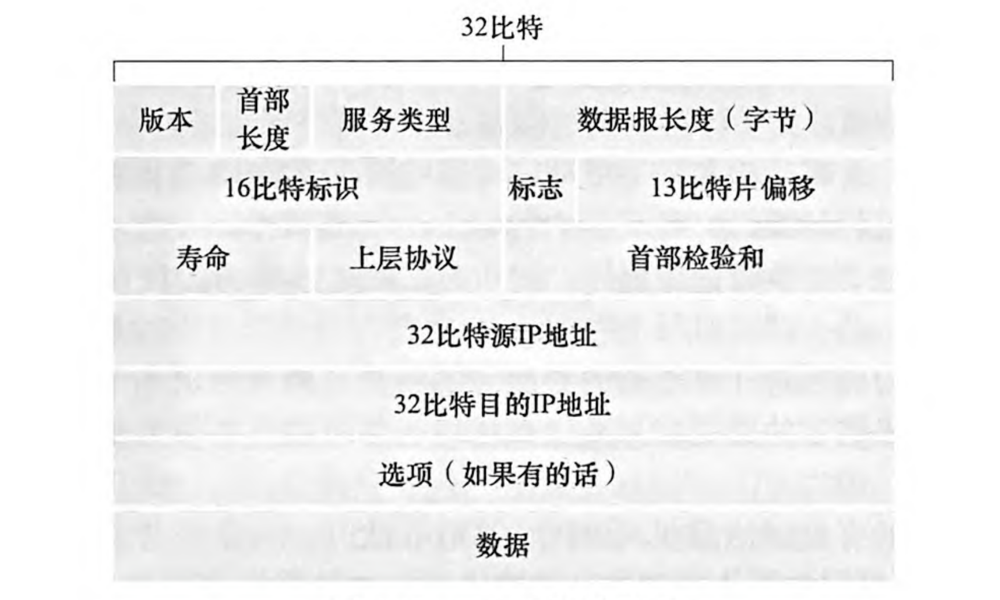

计算机网络知识点整理(4)：网络层之数据平面
Last updated on June 5, 2025 pm
这是SJTU-CS3611《计算机网络》课程的知识点整理系列。本文整理部分为“第4章：网络层之数据平面”。
4.1 网络层概述
- 核心功能：
- 转发：路由器根据转发表将分组转移到适当的输出链路
- 路由器本地操作，时间尺度短，通常用硬件实现，数据平面执行
- 路由：确定分组从源到目的地所采取的端到端路径
- 网络范围，时间尺度长，通常用软件实现，控制平面执行
- 转发：路由器根据转发表将分组转移到适当的输出链路
- 控制平面的实现方法：
- 路由选择算法决定了路由器转发表的内容
- 传统方法：路由选择算法运行在每台路由器中
- SDN 方法：远程控制器计算并分发转发表给路由器
- 网络服务模型：因特网仅提供尽力而为服务（无到达、时延、顺序、带宽保证）
4.2 路由器
4.2.1 路由器结构
- 输入端口：
- 物理层 / 链路层处理
- 转发表查询（查找输出端口）
- 交换结构：将输入端口连接到输出端口
- 输出端口：
- 存储从交换结构接收的分组
- 链路层 / 物理层处理
- 路由处理器：执行控制平面功能
- 传统路由器中：执行路由选择协议，为该路由器计算转发表
- SDN 路由器中：与远程控制器通信，接收和安装转发表项
4.2.2 输入端口处理
- 转发类型：
- 基于目的地的转发：仅基于目的地 IP 地址进行转发
- 广义转发：根据任何一组报头字段的值进行转发
- 转发表查找：
- IP 地址匹配规则：最长前缀匹配
- 硬件加速：三态内容寻址存储器（TCAM）
4.2.3 交换
- 交换速率： 个输入时希望的交换速率为 倍的线路速率
- 交换结构：
- 经内存交换：CPU 直接控制，受内存带宽限制
- 经总线交换：共享总线，受总线带宽限制
- 经互连网络交换：纵横式交换机，并行非阻塞
4.2.4 排队
- 输入端口排队：数据报到达速度超过交换结构的转发速率
- 输出端口争用：交换结构一次只能传送一个分组到某指定端口
- HOL 阻塞：队首分组阻塞后续分组
- 输出端口排队：数据报从交换机结构到达的速度超过链路传输速率
- 丢包：分组可能因缓冲区溢出而丢失
- 缓冲区管理：
- 丢弃策略：缓冲区已满时丢弃哪个数据包（尾部丢弃、优先级丢弃）
- 标记：使用明确拥塞通告比特的方法标记分组
- 调度规则：在排队的数据包中选择以进行传输
- 缓冲区大小：
- 传统：（ 为链路容量）
- 改进：（ 为并发流数）
- 更大的缓冲区会增大排队时延
4.2.5 分组调度
- 先来先服务（FCFS）：即先进先出（FIFO）
- 优先级调度：
- 到达的流量按优先级进行分类并排队
- 从已缓存数据包的最高优先级队列发送数据包
- 循环调度：循环扫描各类队列，依次发送每个类的一个数据包
- 加权公平队列调度（WFQ）：每个类有最低带宽保证
4.3 IP 协议
4.3.1 IPv4 数据报格式

- 首部长度：以 4B 为单位，一般为 20B
- 数据报长度：16 比特，以字节为单位，包含首部
- 标志、标识、片偏移：与 IP 分片有关
- 链路层的最大传输单元（MTU）限制了 IP 数据报长度
- 大的 IP 数据报被分片，到目的地后重新组装
- 片偏移以 8B 为单位
- 寿命（TTL）：剩余的最大跳数，在每个路由器处递减，防止环路
- 首部检验和：只检验数据报的首部
4.3.2 IP编址与子网划分
- IP地址：长度 32 比特，与接口相关联，常以点分十进制表示
- 接口：指主机与物理链路之间的边界
- IP 广播地址：255.255.255.255
- 子网：一个网络中的一组主机，共享相同的 IP 地址前缀
- 子网掩码：表明 IP 地址中的子网部分（全1）和主机部分（全0）
- 子网地址 = IP 地址 子网掩码
- IP 编址：
- 分类编址：具有 8、16 和 24 比特子网地址的子网分别被称为 A、B 和 C 类网络
- 无类别域间路由选择（CIDR）：
- 地址格式：
a.b.c.d/x，x 表示子网地址部分的位数（即前缀长度） - 优势：提高 IP 地址利用率、缩短转发表长度
- 地址格式：
- 路由聚合：使用单个网络前缀通告多个网络，需要匹配最长前缀
- DHCP（动态主机配置协议）：
- 作用：给主机动态地分配 IP 地址（即插即用）
- 应用层协议：基于 UDP
- 配置流程：
- 发现：客户端广播 DHCP 发现报文
- 源地址：0.0.0.0，目的地址：255.255.255.255
- 提供：DHCP 服务器广播 DHCP 提供报文
- 报文包含推荐的 IP 地址、网络掩码、IP 地址租用期等
- 请求：客户端发送 DHCP 请求报文
- 确认：DHCP 服务器发送 DHCP ACK 报文
- 发现：客户端广播 DHCP 发现报文
4.3.3 NAT（网络地址转换）
- 效果：对外部世界而言，本地网络中的所有设备共享一个 IP 地址
- 工作原理：
- 本地网络中的所有设备使用私有 IP 地址（10/8、172.16/12、192.168/16）
- 路由器维护 NAT 转换表（源 IP 地址:端口号 NAT IP 地址:新端口号）
- 路由器对传出和传入的数据报做地址转换
- 优势：地址复用、管理灵活、安全性增强
- 争议：违反端到端原则（网络层操纵端口号）、NAT 穿透难题
4.3.4 IPv6
- 数据报格式变化：
- 扩大地址容量：128 位 IP 地址
- 简化首部：固定 40B，移除校验和、分片、选项字段
- 增加优先级和流标签
- 过渡技术：
- 隧道技术：IPv6 数据报作为 IPv4 数据报的有效载荷在 IPv4 路由器之间传输
4.4 广义转发与中间盒
4.4.1 广义转发
- 核心思想：匹配 + 动作
- 匹配：基于多层次（传输层、网络层、链路层）的首部字段进行模式匹配
- 动作：转发、丢弃、修改字段等
- 流表：匹配加动作转发表
- 来源：由远程控制器计算和分发
- 表项结构：首部字段的匹配模式值 + 优先级 + 计数器 + 操作
- 特点：具有可编程性，抽象化统一了不同类型的设备（负载均衡器、防火墙等）
4.4.2 中间盒（Middlebox）
- 定义：在源主机和目的主机之间数据路径上执行除 IP 路由器的正常标准功能之外的功能的任何中间盒
- 常见类型：防火墙、负载均衡器、NAT 网关等
- 主要服务：NAT 转换、安全服务、性能增强
- 网络功能虚拟化（NFV）：通用硬件 + 可编程服务
计算机网络知识点整理(4)：网络层之数据平面
https://cny123222.github.io/2025/04/25/计算机网络知识点整理-4-：网络层之数据平面/